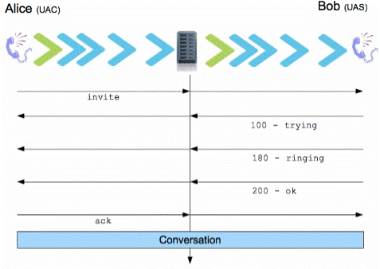
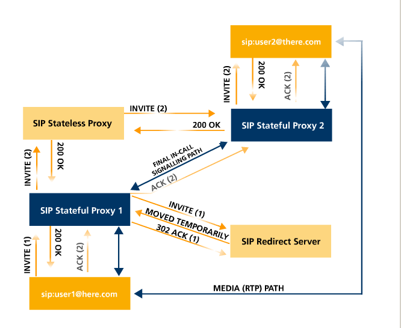
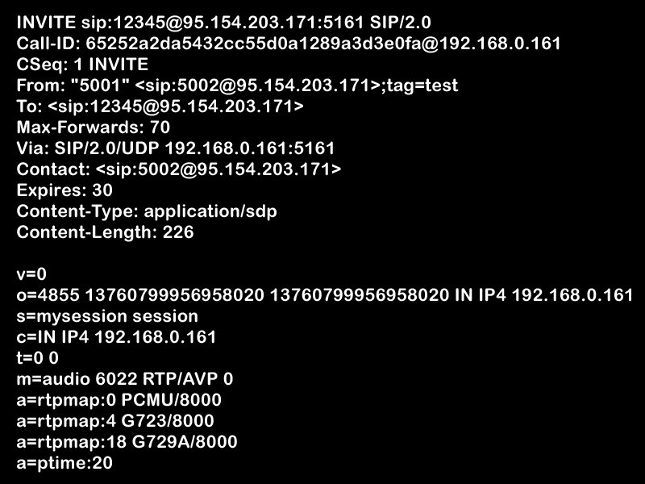
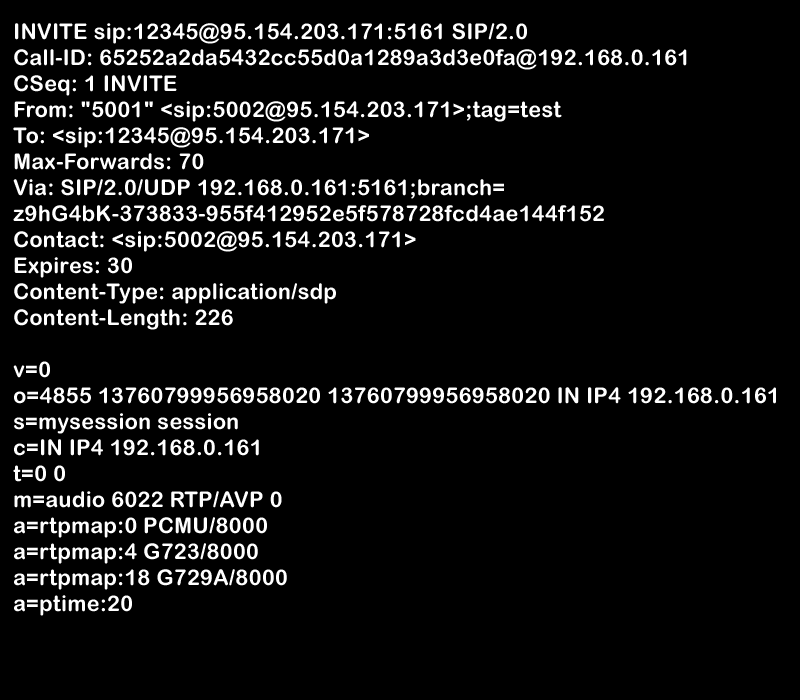
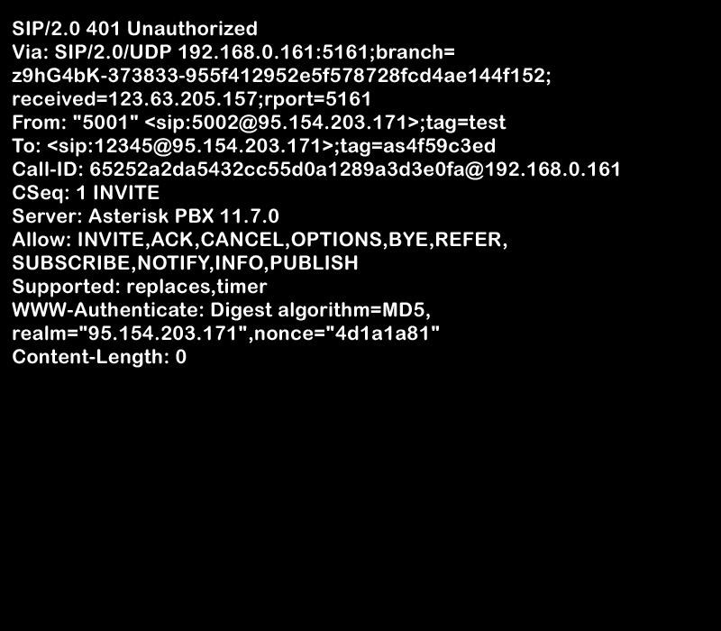
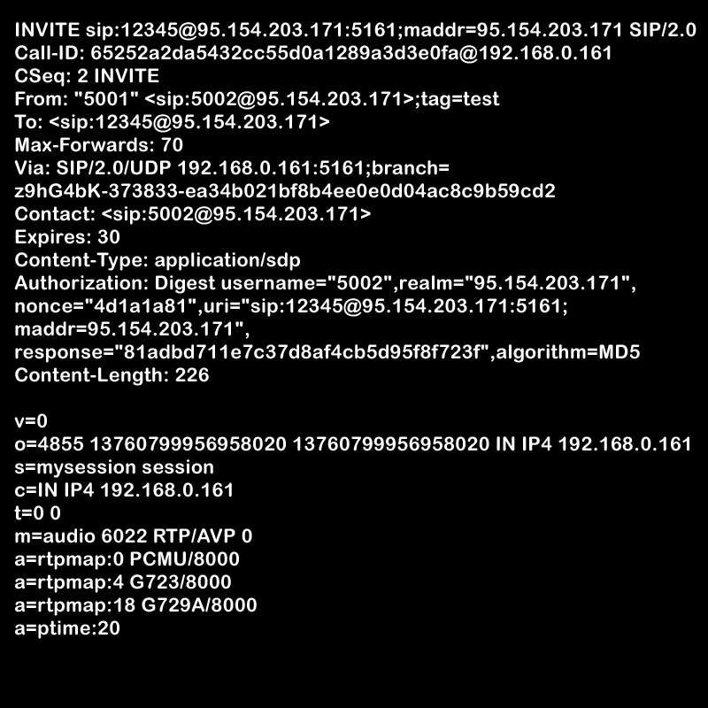
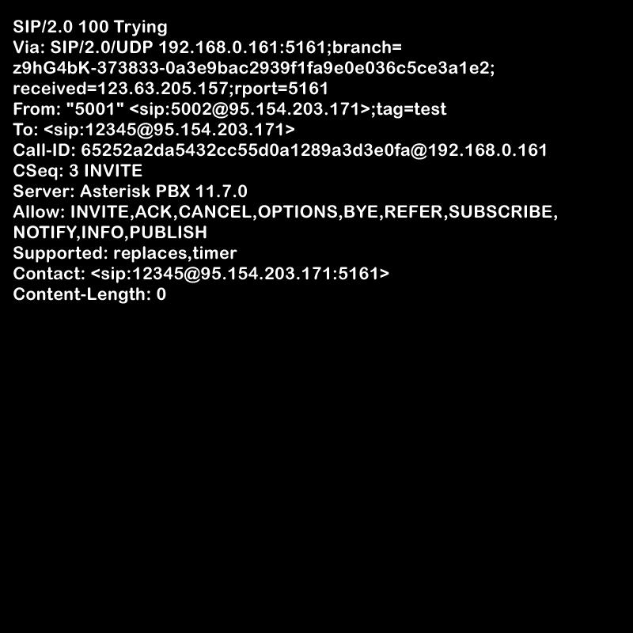
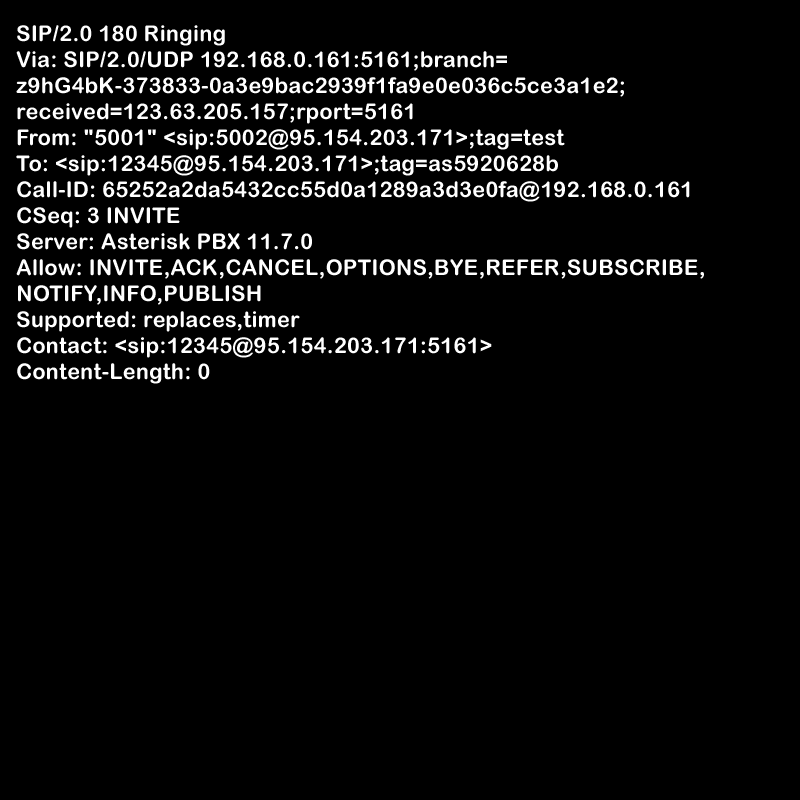
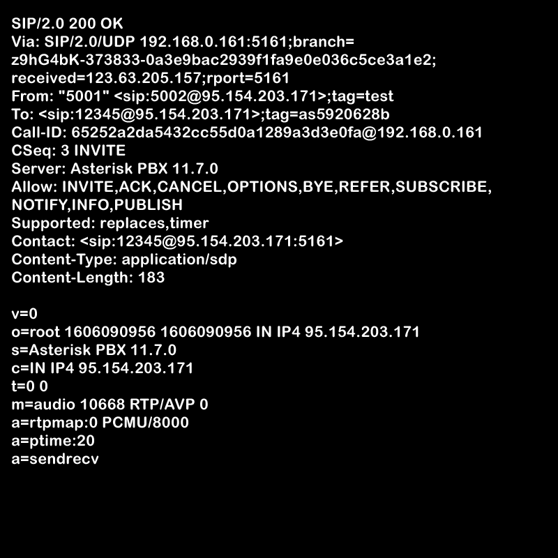
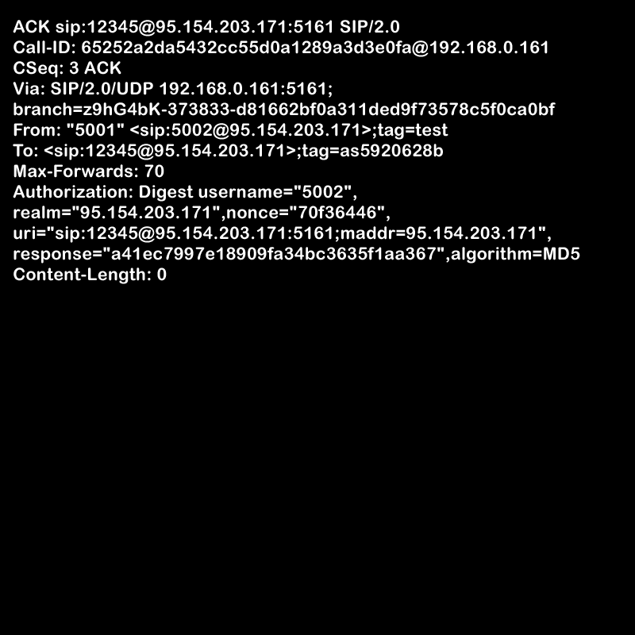

SIP
Session Initiation Protocol
Presentation by Indrajith K L
Made with Reveal.js and Atom-shellSIP?
- SIP was originally designed by Henning Schulzrinne and Mark Handley in 1996
- Control Multimedia Session
- Signalling Protocol
- Glue to tie Comm.Sys with server
- Used in VOIP systems
UA, UAC & UAS
- Entities which interacts in SIP - UA
- UA are of two types
- UAC - User Agent Client
- UAS - User Agent Server
UA, UAC & UAS
- UAC generates methods and send them to server
- UAS receives methods, process them and generate responses.
- UAS is the generic name of device that receives method.
Who’s UAS and UAC?
- In SIP one can act as both UAS and UAC
- It depends on who initiates the call and who accepts it.
- UA’s are identified by an unique URI.
The Unique URI
Proxy servers in SIP
- SIP comm. are routed through one ore more SIP server
- Proxy Servers track down IP’s of the caller and receiver.
- If one Proxy Server cannot find an IP it will send request to other proxy server and so on…
Proxy servers in SIP
- If A calls B, A only knows ‘SIP URI’ of B.
- Proxy server will evaluate the rest of the hard work
- Proxy Server uses presence services to track users which can be located regardless of their physical location.
Proxy servers in SIP
- So what is a presence service?
- Normally a request like REGISTER.
- What REGISTER?
- REGISTER is a request to the server which is used to show availability of a UA.
- To check wheather UA is reachable or not.
Registrar Server
- Responsible for registering devices in an SIP comm.
- Authenticate UA with username and password
- Keeps table of IP addresses and extension phone numbers.
- Ex : Asterisk,Brekeke, TekSIP….
SIP Requests and Responses
- There are 6 basic request in SIP
- INVITE
- REGISTER
- BYE
- ACK
- CANCEL
- OPTIONS
SIP Requests and Responses
- There are many responses in SIP, so they are generalized like this
- 1xx
- 2xx
- 3xx
- 4xx
- 5xx
- 6xx
Requests in SIP
- INVITE
- Establishes a session
- REGISTER
- Register user with server – the SIP server
- BYE
- Ends a session
- ACK
- Confirms an INVITE request
- CANCEL
- Cancels establishing a session.
- OPTIONS
- Contains info about capabilities of callie and receiver.
- There are many more
- SUBSCRIBE
- NOTIFY
- INFO
- .....
SIP Responses
- 1xx
- They are basically information responses.
Ex : 100 Trying, 180 Ringing
- 2xx
- They are Success responses
Ex : 200 OK
- 3xx
- Redirection responses
Ex : 305 Use Proxy
Ex : 301 Moved Permanently
SIP Responses
- 4xx
- Request failures
Ex : 400 Bad Requests, 404 Not found
- 5xx
- Server Error
Ex : 504 Server Timeout, 500 Server Internal Error
- 6xx
- Global failures
Ex : 600 Busy Everywhere, 606 Not Acceptable.
Test Case
- Callie – 5002@95.154.203.171:5161 Username : 5002
- Receiver – 5001@95.154.203.171:5161 Username : 5001
- SIP Registrar(Server) - 95.154.203.171:5161 Running Asterisk Server
Password : Iwillnottellyouburn
Password : AgainIwillnottellyouburn
Inviting..
Inviting..
Inviting.. Unauthorized!
Inviting.. Authorizing
(Uses Digest access authentication) Inviting.. Trying...
Inviting.. Got you! Ringing...
Connected...
Hi There
 Complete source code of the presentation can be found in
Complete source code of the presentation can be found in https://github.com/cooljith91112/sipseminar